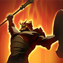

MARS
ระยะประชิด
ตัวแคร์รี่
ตัวเปิด
ตัวหยุด
ตัวยืน




TALENT
ความสามารถโดยย่อ
Spear of Mars
- ด้วยความที่สกิลนี้สามารถสตันศัตรูได้ เมื่อปาศัตรูไปโดนสิ่งก่อสร้างหรือหน้าผา แต่รู้หรือไม่ Areana of Blood ก็นับเป็นสิ่งก่อสร้างนะ บอกเลยว่าถ้าปาหอกแล้วศัตรูไปติดกับ Area of Blood ศัตรูเลือดไหลเป็นน้ำแน่นอนGod's Rebuke
- ด้วยความที่สกิลนี้ความเสียหายขึ้นอยู่กับพลังโจมตีของ Mars บอกเลยว่าถ้าออกไอเท็มเพิ่มพลังโจมตี ศัตรูตัวบางๆไม่รอดแน่ แถมสกิลนี้ทำให้ Mars สามารถฟามครีปได้อย่างรวดเร็วBulward
- ด้วยความที่สกิลนี้ทำให้คนที่โจมตีด้านหน้าโล่ของ Mars หรือด้านข้างโดนลดความเสียหาย ทำให้ Mars เป็นตัวที่ถึกมาก เพราะหากเราใช้สกิลนี้ดีๆ เราจะสามารถลดความเสียหายที่ได้รับถึง 70% !! Arena of Blood
- ด้วยความที่สกิลนี้สามารถขังศัตรูหรือเพื่อนร่วมทีมไว้ได้ ทำให้ศัตรูที่ถูกขังไว้ข้างในไม่สามารถทำการโจมตีออกมาด้านนอกได้และศัตรูข้างนอกก็ไม่สามารถมาโจมตีเพื่อนร่วมทีมที่อยู่ข้างในได้ด้วย บอกเลยว่าถ้าใช้ดีๆ ศัตรูจะไม่สามารถทำความเสียหายแก่เพื่อนร่วมทีมเราได้เลย
BACK
ข้อมูลเพิ่มเติม